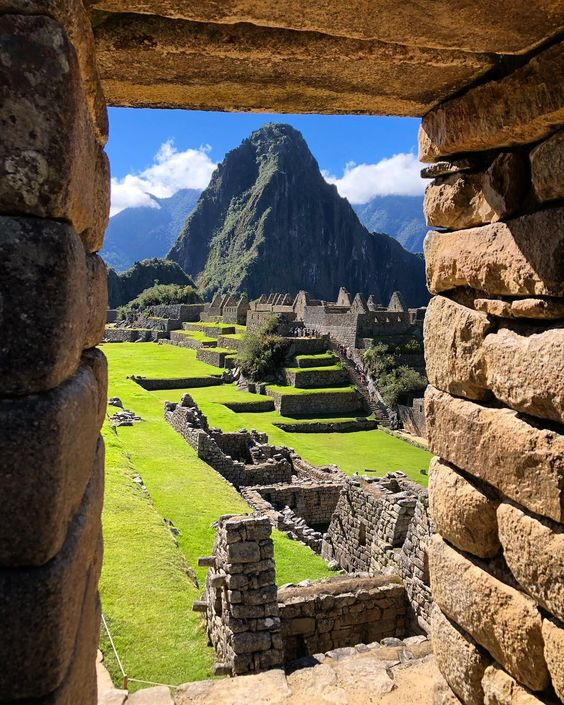

Armado de Retablos. Es un evento muy popular en fiestas tradicionales como el Corpus Christi o Cruz Velacuy. Estas estructuras artísticas son conocidos como altares, los cuales son realizados con mucha paciencia y precisión por maestros artesanos.

Vista del pico de la montaña a través de la ventana en machu picchu, cusco región, provincia de urubamba, distrito de machupicchu, perú. Una sociedad sostenible que veneraba a los animales y al medio ambiente por encima de todo.
Nuestra provincia de Chumbivilcas no solo se destaca por la ganadería sino también por la alta calidad de sus tejidos elaborados a mano. En la antigüedad, la bayeta (tela de lana de oveja) fue la materia prima para la confección de prendas. Sin embargo, hoy muchas veces para fabricar los trajes chumbivilcanos se utilizan telas sintéticas que son importadas de otros países..
Todas las prendas que elabora Ayde están hechas con insumos naturales, los más de 100 colores con que pinta los hilos de lana son la combinación de flores, hojas y tierra, que con habilidad logra impregnarlas en sus telas. “Yo tiño con la flores, Q’era, Ch’illca, maych’a, mula kisa (plantas originarias Recuperando el tejido tradicional Chumbivilcano de la sierra), cochinilla, eucalipto, marcko y salvia, utilizo la ccollpa (tierra salada que contiene minerales) para que se impregne mejor. También se utiliza la qechincha (hollín) y el rumiunko (planta que crece entre las rocas)”, comenta Ayde, mientras continua tejiendo una chalina.
(Lima, 11 de noviembre de 2020).- Más de 14 mil hectáreas de cultivos nativos de la Comunidad Campesina de Ccollasuyo en la región del Cusco, han sido reconocidos por el Ministerio de Agricultura y Riego (MINAGRI) como la tercera zona de Agrobiodiversidad del Perú, en virtud a la importante presencia de diversidad genética.
La alpaca terapia es una forma alternativa de turismo que combina las experiencias paisajísticas y vivenciales. La montaña de siete colores está ubicada en el departamento del Cusco, provincia de Canchis. Vinicunca esta ubicada en un área de considerable elevación, que pertenece al pueblo de Pitumarca quienes casualmente lo llamaban ‘Cerro Colorado’; donde se sitúa el camino al imponente nevado Ausangate. Elevó su popularidad con las fotos subidas en redes sociales por viajeros quienes quedaron encantados por la belleza del lugar.